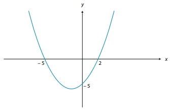
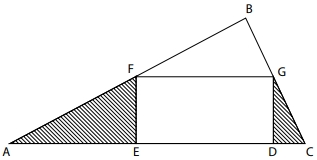
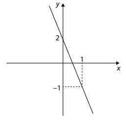
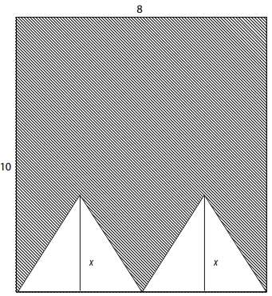

01. O preço da saca de feijão nos meses de julho, agosto,
setembro e outubro foi de 200 reais, 220 reais, 270 reais e
250 reais, respectivamente. Qual foi o preço médio da saca
de feijão nos meses de julho a outubro?
02. Ana recebeu uma carta e quer guardá-la em uma caixinha
que tem 7 cm de largura, 7 cm de comprimento e 2 cm de
altura. Ela irá dobrar a carta sempre ao meio até conseguir
um tamanho que caiba na caixinha.
Sabendo que a carta é uma folha de papel quadrada de
lado 24 cm e espessura 1 mm, qual é a quantidade mínima de dobras que Ana deve fazer para conseguir colocar a
carta na caixinha?
03. Considere o gráfico a seguir, que representa a parábola
y = ax²+ bx + c.

Qual é o valor de a + b + c?
04. Na figura, o triângulo ABC é retângulo, com ângulo reto no
vértice B, possuindo área igual a 24 cm²,
e o quadrilátero
DEFG é um retângulo de área igual a 12 cm².

Sabendo que AF = FB = x + 1 e BG = GC = x, a área hachurada é igual a
05. Uma sala de 20 alunos realizou uma prova de Matemática.
A nota média da turma foi 6. Sabe-se que a média das cinco piores notas foi 3. Qual foi a média das notas do restante da turma?
06. Um time de vôlei amador conta com 10 jogadores, sendo
que todos se dispõem a jogar em qualquer posição. O time
que inicia a partida é composto por 6 jogadores.
Tendo todos à disposição, de quantas maneiras distintas o
técnico desse time pode escolher os jogadores para montar o time que iniciará uma partida?
07. A figura a seguir representa o gráfico de uma reta.

A partir dos dados, pode-se afirmar que o valor da inclinação da reta é igual
08. A figura a seguir apresenta um retângulo de dimensões
8 cm × 10 cm e dois triângulos iguais cuja altura mede x cm.

Sabendo que a área da região hachurada é 64 cm²,
pode-se concluir que o valor de x, em cm, é igual a